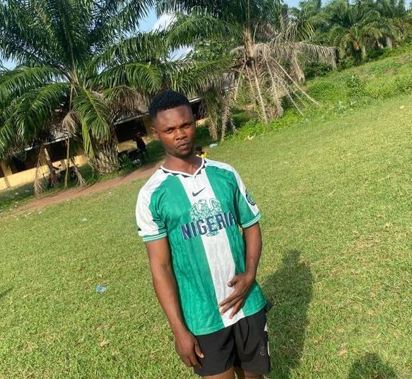

Egondi Emmanuel
Defensive Midfielder (CDM)
Height: 5'8" | Age: 22 | Nationality: Nigerian
About
Egondi Emmanuel is an outstanding Right Back with remarkable pace and versatility. Known for his defensive reliability and seamless transitions into attack, he’s an integral part of the Green Rangers FC squad, combining solid tackles with precise crosses to support the team’s offensive plays.
Career History
- 2023–Present: Green Rangers FC
- 2019–2023: Amakem FC (Lagos)
Achievements
- 🆠#1
- 🥇 #2
- 🖠#3
- 💯 #4
Performance Stats
Get In Touch with Green Rangers FC
Have a question, suggestion, or want to collaborate? Send us a quick message!